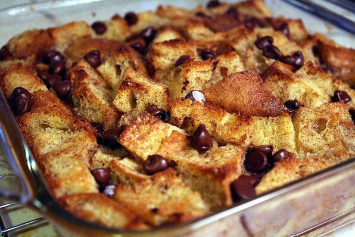

Bread Pudding

Delicious Bread Pudding for Breakfast or Dessert
Use this recipe to enjoy some bread pudding with your family and friends!
Ingredients
- 6 slices day-old bread
- 2 tablespoons butter, melted
- ½ cup raisins (Optional)
- 4 eggs, beaten
- 2 cups milk
- ¾ cup white sugar
- 1 teaspoon ground cinnamon
- 1 teaspoon vanilla extract
Steps
- Preheat oven to 350 degrees F (175 degrees C).
-
Break bread into small pieces into an 8 inch square baking pan. Drizzle
melted butter or margarine over bread. If desired, sprinkle with
raisins.
-
In a medium mixing bowl, combine eggs, milk, sugar, cinnamon, and
vanilla. Beat until well mixed. Pour over bread, and lightly push down
with a fork until bread is covered and soaking up the egg mixture.
-
Bake in the preheated oven for 45 minutes, or until the top springs back
when lightly tapped.